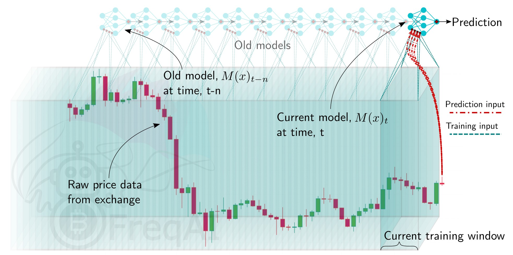

运行 FreqAI¶
有两种方式可以训练和部署自适应机器学习模型 - 实盘部署和历史回测。在这两种情况下，FreqAI 都会运行/模拟定期重新训练模型，如下图所示：

实盘部署¶
可以使用以下命令以模拟/实盘模式运行 FreqAI：
freqtrade trade --strategy FreqaiExampleStrategy --config config_freqai.example.json --freqaimodel LightGBMRegressor
启动后，FreqAI 将根据配置设置开始训练一个具有新 identifier 的新模型。训练完成后，该模型将用于对后续的 K 线数据进行预测，直到有新模型可用。新模型通常会尽可能频繁地生成，FreqAI 会管理一个交易对内部队列，以尝试保持所有模型同步更新。FreqAI 将始终使用最近训练的模型对实时数据进行预测。如果您不希望 FreqAI 尽可能频繁地重新训练新模型，可以设置 live_retrain_hours 来告诉 FreqAI 在训练新模型前至少等待指定的小时数。此外，您可以设置 expired_hours 来告诉 FreqAI 避免使用超过指定小时数的旧模型进行预测。
默认情况下，训练好的模型会保存到磁盘，以便在回测期间或系统崩溃后重复使用。您可以通过在配置中设置 "purge_old_models": true 来选择清理旧模型数据以节省磁盘空间。
要从已保存的回测模型（或之前崩溃的模拟/实盘会话）启动模拟/实盘运行，您只需指定特定模型的 identifier：
"freqai": {
"identifier": "example",
"live_retrain_hours": 0.5
}
在这种情况下，虽然 FreqAI 会使用预训练模型启动，但它仍会检查自模型训练以来经过的时间。如果自加载模型训练结束已过去完整的 live_retrain_hours，FreqAI 将开始训练新模型。
自动数据下载¶
FreqAI 会自动下载通过定义的 train_period_days 和 startup_candle_count 确保模型训练所需的适量数据（有关这些参数的详细说明，请参阅参数表）。
保存预测数据¶
在特定 identifier 模型生命周期内进行的所有预测都存储在 historic_predictions.pkl 中，以便在崩溃或配置更改后重新加载。
清理旧模型数据¶
FreqAI 在每次成功训练后存储新的模型文件。随着新模型的生成以适应新的市场条件，这些文件会变得过时。如果您计划长时间运行 FreqAI 并进行高频重训练，应在配置中启用 purge_old_models：
"freqai": {
"purge_old_models": 4,
}
这将自动清理除最近训练的四个模型之外的所有旧模型以节省磁盘空间。输入 "0" 将永不清理任何模型。
回测¶
FreqAI 回测模块可以通过以下命令执行：
freqtrade backtesting --strategy FreqaiExampleStrategy --strategy-path freqtrade/templates --config config_examples/config_freqai.example.json --freqaimodel LightGBMRegressor --timerange 20210501-20210701
如果从未使用现有配置文件执行过此命令，FreqAI 将在扩展的 --timerange 内的每个回测窗口中，为每个交易对训练一个新模型。
回测模式在部署前需要下载必要的数据（与干燥/实盘模式不同，在干燥/实盘模式下 FreqAI 会自动处理数据下载）。您应注意确保下载数据的时间范围大于回测时间范围。这是因为 FreqAI 需要所需回测时间范围之前的数据，以便训练模型，使其能够在设定的回测时间范围的第一根蜡烛图上进行预测。有关如何计算要下载数据大小的更多详细信息，请参见此处。
模型复用
训练完成后，你可以使用相同的配置文件再次执行回测，
FreqAI 将找到已训练的模型并加载它们，而无需花费时间重新训练。这在
你希望调整（甚至进行超参数优化）策略内的买入和卖出条件时非常有用。如果
你想要使用相同配置文件重新训练新模型，只需更改 identifier 即可。
通过这种方式，你可以通过简单指定 identifier 来恢复使用任何模型。
Note
回测过程中，每个回测窗口会调用一次 set_freqai_targets()（窗口数量等于完整回测时间范围除以 backtest_period_days 参数）。这样做意味着目标函数模拟了实盘/干运行行为，避免了前视偏差。然而，feature_engineering_*() 中的特征定义是在整个训练时间范围内一次性完成的。这意味着你应确保特征不会窥视未来数据。
关于前视偏差的更多细节可在常见错误中找到。
保存回测预测数据¶
为了允许调整您的策略（而非特征！），FreqAI 会在回测期间自动保存预测结果，以便在后续使用相同 identifier 模型的回测和实盘运行中重复使用。这一性能优化旨在支持入场/出场条件的高级超参数优化。
在 unique-id 文件夹中将创建一个名为 backtesting_predictions 的附加目录，其中包含以 feather 格式存储的所有预测结果。
若要更改您的特征，您必须在配置中设置新的 identifier，以通知 FreqAI 训练新模型。
如需保存特定回测期间生成的模型，以便从其中一个模型启动实盘部署而非训练新模型，您必须在配置中将 save_backtest_models 设置为 True。
Note
为确保模型可重复使用，FreqAI 将使用长度为 1 的数据框调用您的策略。
若您的策略需要更多数据才能生成相同特征，则无法将回测预测结果用于实盘部署，需为每次新回测更新 identifier。
回测实盘收集的预测结果¶
FreqAI 允许您通过回测参数 --freqai-backtest-live-models 重复使用历史实盘预测结果。当您希望重复使用模拟运行中生成的预测结果进行比较或其他研究时，此功能非常有用。
不得指定 --timerange 参数，因为它将通过历史预测文件中的数据自动计算。
下载覆盖完整回测周期的数据¶
对于实盘/模拟部署，FreqAI 会自动下载必要的数据。但若要使用回测功能，您需要使用 download-data 下载必要的数据（详情参见此处）。需要特别注意理解需要下载多少额外数据，以确保在回测时间范围开始前有足够的训练数据。额外数据量可大致通过将时间范围的开始日期向前推移 train_period_days 和 startup_candle_count（有关这些参数的详细说明请参阅参数表）来估算。
例如，使用示例配置（设置 train_period_days 为 30）回测 --timerange 20210501-20210701，同时 startup_candle_count: 40 且最大 include_timeframes 为 1h，则下载数据的开始日期需为 20210501 - 30天 - 40 * 1小时 / 24小时 = 20210330（比期望训练时间范围起点早 31.7 天）。
确定滑动训练窗口大小和回测时长¶
回测时间范围通过配置文件中的典型 --timerange 参数定义。滑动训练窗口的时长由 train_period_days 设置，而 backtest_period_days 是滑动回测窗口，两者均以天数表示（backtest_period_days 可以是浮点数，用于实盘/模拟模式下的日内重训练）。在提供的示例配置（位于 config_examples/config_freqai.example.json 中），用户要求 FreqAI 使用 30 天的训练周期，并在随后的 7 天进行回测。模型训练完成后，FreqAI 将对后续 7 天进行回测。随后"滑动窗口"向前移动一周（模拟实盘模式下每周重训练一次），新模型使用前 30 天（包括前一个模型用于回测的 7 天）进行训练。这一过程将重复直至 --timerange 结束。这意味着如果设置 --timerange 20210501-20210701，FreqAI 将在 --timerange 结束时训练出 8 个独立模型（因为整个时间范围包含 8 周）。
Note
尽管允许使用小数形式的 backtest_period_days，但您需要注意，--timerange 会除以该值以确定 FreqAI 需要训练的模型数量，从而完成整个时间范围的回测。例如，设置 --timerange 为 10 天，backtest_period_days 为 0.1，FreqAI 将需要为每个交易对训练 100 个模型才能完成完整回测。因此，对 FreqAI 自适应训练进行真正的回测将花费非常长的时间。全面测试模型的最佳方式是进行模拟运行并让其持续训练。在这种情况下，回测所需时间将与模拟运行完全相同。
定义模型过期时间¶
在模拟/实盘模式下，FreqAI 会按顺序训练每个交易对（在独立于主 Freqtrade 机器人的线程/GPU 上）。这意味着模型之间始终存在时间差异。如果您正在训练 50 个交易对，且每个交易对需要 5 分钟训练，那么最旧的模型将超过 4 小时。如果策略的特征时间尺度（交易持续时间目标）小于 4 小时，这可能是不理想的。您可以通过在配置文件中设置 expiration_hours 来决定仅在使用特定小时数内的模型进行交易入场：
"freqai": {
"expiration_hours": 0.5,
}
在示例配置中，用户将仅允许使用小于 0.5 小时龄的模型进行预测。
控制模型学习过程¶
模型训练参数取决于所选的机器学习库。FreqAI允许您通过配置文件中的model_training_parameters字典为任何库设置任意参数。示例配置文件（位于config_examples/config_freqai.example.json）展示了与Catboost和LightGBM相关的一些示例参数，但您可以添加这些库或您选择实现的任何其他机器学习库中可用的任何参数。
数据拆分参数在data_split_parameters中定义，这些参数可以是与scikit-learn的train_test_split()函数相关的任何参数。train_test_split()有一个名为shuffle的参数，允许对数据进行洗牌或保持不洗牌。这对于避免因时间自相关数据导致训练偏差特别有用。有关这些参数的更多详细信息可在scikit-learn网站（外部网站）找到。
FreqAI特有参数label_period_candles定义了用于labels的偏移量（未来蜡烛图的数量）。在提供的示例配置中，用户要求获取未来24根蜡烛图的labels。
持续学习¶
您可以通过在配置中设置 "continual_learning": true 来选择采用持续学习方案。启用 continual_learning 后，在从头开始训练初始模型之后，后续训练将从前一次训练的最终模型状态开始。这使新模型能够“记忆”之前的状态。默认情况下，该选项设置为 False，意味着所有新模型都从头开始训练，不继承先前模型的任何信息。
持续学习要求参数空间保持恒定
由于 continual_learning 意味着模型参数空间在训练之间不能改变，因此当启用 continual_learning 时，principal_component_analysis 会自动禁用。提示：PCA 会改变参数空间和特征数量，了解更多关于 PCA 的信息请参阅此处。
实验性功能
请注意，当前这是一种朴素的增量学习方法，在市场偏离您的模型时，很可能出现过度拟合/陷入局部极小值的情况。我们在 FreqAI 中提供此机制主要是为了实验目的，并为在像加密货币市场这样的混沌系统中实现更成熟的持续学习方法做好准备。
超参数优化¶
您可以使用与常规 Freqtrade 超参数优化相同的命令进行超参数优化：
freqtrade hyperopt --hyperopt-loss SharpeHyperOptLoss --strategy FreqaiExampleStrategy --freqaimodel LightGBMRegressor --strategy-path freqtrade/templates --config config_examples/config_freqai.example.json --timerange 20220428-20220507
hyperopt 要求您以与回测相同的方式预先下载数据。此外，在尝试对 FreqAI 策略进行超参数优化时，您必须考虑以下限制：
--analyze-per-epoch超参数优化参数与 FreqAI 不兼容。- 无法对
feature_engineering_*()和set_freqai_targets()函数中的指标进行超参数优化。这意味着您不能使用 hyperopt 优化模型参数。除了此例外情况，可以优化所有其他空间。 - 回测说明同样适用于超参数优化。
结合 hyperopt 和 FreqAI 的最佳方法是专注于超参数优化入场/出场阈值/条件。您需要专注于优化未在特征中使用的参数。例如，不应尝试优化特征创建中的滚动窗口长度，或 FreqAI 配置中任何会改变预测结果的部分。为了高效地对 FreqAI 策略进行超参数优化，FreqAI 将预测结果存储为数据框并重复使用。因此要求仅优化入场/出场阈值/条件。
FreqAI 中一个可超参数优化的良好示例是差异性指数（DI） DI_values 的阈值，超过该阈值我们将数据点视为异常值：
di_max = IntParameter(low=1, high=20, default=10, space='buy', optimize=True, load=True)
dataframe['outlier'] = np.where(dataframe['DI_values'] > self.di_max.value/10, 1, 0)
这个特定的超参数优化将帮助您理解适用于您特定参数空间的 DI_values。
使用 Tensorboard¶
可用性
FreqAI 为多种模型集成了 tensorboard，包括 XGBoost、所有 PyTorch 模型、强化学习和 Catboost。如果您希望在其他模型类型中看到 Tensorboard 集成，请在 Freqtrade GitHub 上提交问题。
要求
Tensorboard 日志记录需要 FreqAI torch 安装/ Docker 镜像。
使用 tensorboard 最简单的方法是确保您的配置文件中 freqai.activate_tensorboard 设置为 True（默认设置），运行 FreqAI，然后打开一个单独的终端并运行：
cd freqtrade
tensorboard --logdir user_data/models/unique-id
其中 unique-id 是 freqai 配置文件中设置的 identifier。如果您希望在浏览器中通过 127.0.0.1:6060（6060 是 Tensorboard 使用的默认端口）查看输出，则必须在单独的终端中运行此命令。

停用以提升性能
Tensorboard 日志记录会减慢训练速度，在生产使用时应停用。